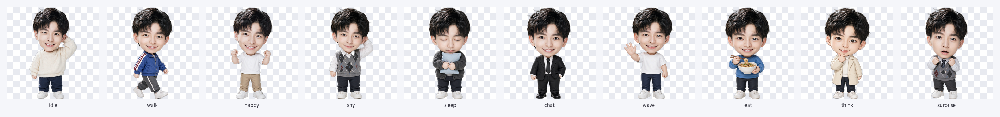

郭文韬 · 桌面宠物
写实立绘 · 透明贴纸式桌宠 · 单文件 EXE，无需安装 Python
10 种姿态
对话气泡
粒子装饰
3 种待机动画
托盘图标
1快速开始
- 双击
文韬桌宠.exe（就在本文件夹里）。 - 首次启动会等 1~3 秒才出现——这是单文件程序自解压，属正常现象，之后就快了。
- 他会出现在屏幕右下角，直接开用。
无需安装任何东西。Python 解释器、Qt 界面库、运行库和素材都已经打包进这一个 exe，
拷到任何 64 位 Windows 10 / 11 电脑、甚至 U 盘，双击就能跑。
Win7 / Win8 或 32 位系统跑不了（要的话需要重新打包）。
若杀毒软件误报，选择"允许 / 添加信任"即可——PyInstaller 打包程序常见的误报，不是病毒。
若杀毒软件误报，选择"允许 / 添加信任"即可——PyInstaller 打包程序常见的误报，不是病毒。
2基本操作
| 操作 | 效果 |
|---|---|
| 按住左键拖动 | 把桌宠拖到任意位置；拖动时他会做跑动姿势并自动朝移动方向转身。 松手后位置自动记住，下次打开还在原地。 |
| 单击角色 | 轮流触发三种互动：跳跃 → 压扁回弹 → 左右抖动（抖动时会换成惊讶表情），每次配一句随机台词 + 闪光粒子。 |
| 滚轮上下滚 | 放大 / 缩小桌宠（大约 98px ~ 1050px 高），以脚底为基准缩放，不会乱跳位置。 |
| 右键单击 | 弹出功能菜单（见下一节）。 |
他闲下来时会有一点待机小动作和偶尔的自言自语，不用管他，他在自己玩。
3右键菜单详解
| 菜单项 | 说明 |
|---|---|
| 陪我聊聊天 | 换上黑西装造型，说一句随机的话，配音符 + 星星粒子。 |
| 摸摸头 | 害羞挠头表情 + 蹦一下，冒爱心。 |
| 喂吃的 | 丢一份食物（🍗🍜🍰🧋…）飞进他怀里，吃完换成端着碗吃饭的姿势，配爱心 + 彩带。 |
| 让他走路 | 他会在屏幕上散步，碰到屏幕边缘自动折返，走 8~14 秒后停下（用走路专用的姿态）。 |
| 让他睡觉 | 变成闭眼抱枕打瞌睡，画面变暗并飘出 Zzz。点他一下就会醒来（醒来会挥手打招呼）。 |
| 跟随鼠标 | 勾选后他会一路小跑跟着你的鼠标；再点一次取消。 （手动拖动他时会自动取消跟随，避免打架。） |
| 调整大小 | 子菜单：放大一点 / 缩小一点 / 恢复默认大小。 |
| 待机动画 | 三选一，随时切换： 呼吸（默认，胸口轻微起伏）·漂浮（整只上下浮动）·摇摆（左右轻轻晃） |
| 窗口置顶 | 默认开着，他永远在最上层。取消勾选后会被其他窗口盖住，再勾回来即可。 |
| 开机自启 | 勾选后每次开机自动出现。想关掉：取消勾选，或在任务管理器 → 启动应用里禁用 WenTaoPet。 |
| 退出程序 | 保存好位置和设置后退出。（直接关机也没问题，会自动保存。） |
4托盘图标：找不到他时的救星
- 运行后任务栏右下角会出现一个小图标（托盘区），右键它有三个选项：显示桌宠 / 窗口置顶 / 退出程序。
- 桌宠被全屏窗口挡住、或不小心拖到屏幕外面看不见时，点显示桌宠就会把他拉回来。
5常见问题
| 情况 | 怎么办 |
|---|---|
| 双击后没反应 / 等了几秒才出来 | 正常的，单文件 exe 要先自解压（1~3 秒）。若超过 10 秒还没出现，看看是不是被杀软拦了。 |
| 提示"Windows 已保护你的电脑" | 点"更多信息 → 仍要运行"，或给文件添加信任。 |
| 桌宠不见了 | 看托盘图标 → 右键 → 显示桌宠。若托盘没有图标，就重新双击 exe（程序做了单实例保护，不会开出两只）。 |
| 位置 / 大小记不住 | 设置保存在 %APPDATA%\WenTaoPet\config.json。删掉这个文件即恢复默认（右下角 + 默认大小）。 |
| 同时打开两个会怎样 | 第二个会自动退出，只保留一只在跑。 |
| 想换个形象 / 多几种姿势 | 给几张正脸清晰的照片就能重新生成写实立绘，做成新的姿态（跳跃、比心、生气等都可以加）。 |
6文件说明
| 文件 | 用途 |
|---|---|
| 文韬桌宠.exe | 桌宠本体，双击运行（唯一需要保留的文件，可随意拷贝/放 U 盘）。 |
| 效果预览.png | 深色桌面下的整体效果参考（气泡 + 粒子）。 |
| wentaopet\素材预览.png | 10 种姿态素材一览。 |
| wentaopet\ | 素材与源码目录（main.py、抠图脚本、AI 生成原图）。删掉不影响 exe 运行。 |

